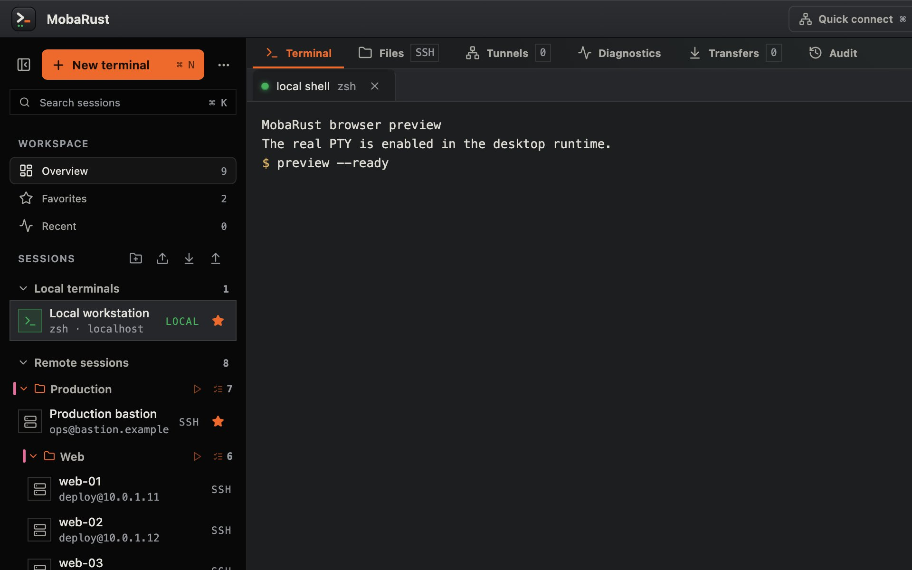
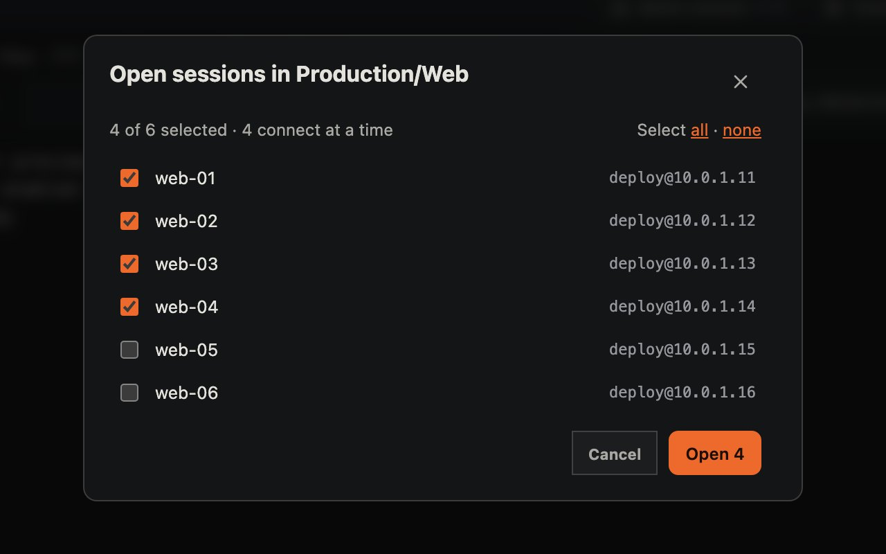
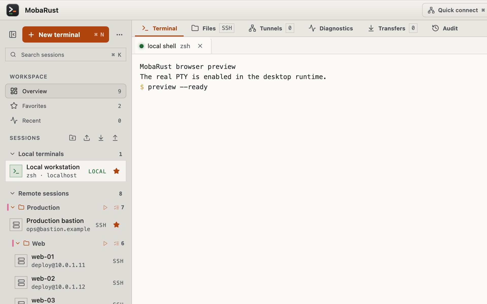

The terminal gets the window
Resizable or hidden sidebar, focus mode, tabs and splits that resize the PTY, scrollback search, font zoom, and reopen for closed tabs.
Open source · Rust-native · macOS first
MobaRust is a free MobaXterm alternative for macOS, Linux and Windows. It gives you terminal tabs and splits, SSH with verified host keys, SFTP, tunnels, and whole server groups opened at once.
14 SSH sessions to a real local OpenSSH server, 4 at a time: connected in 209 ms in our loopback test.

main, browser preview of the real UI.Session groups
Groups nest as deep as your infrastructure does. Open all of a group with one click, or tick a few servers. Connections run four at a time, so your server's SSH limits don't drop them. Every host gets a status light, and failures can be retried on their own.
$ mobarust --open-group "Production/Web"

What's inside
Resizable or hidden sidebar, focus mode, tabs and splits that resize the PTY, scrollback search, font zoom, and reopen for closed tabs.
Keys, agent, password and keyboard-interactive auth. Jump hosts and reconnect. Unknown host keys are never accepted silently.
SFTP and SCP with progress, cancel and retry. Remote text editing checks for conflicts before saving.
Local, remote and SOCKS5 forwards with explicit bind addresses and live byte counts.
Import .mxtsessions exports with a preview and a choice for each duplicate. Import is partial: SSH host, port, user and folders. Passwords are never imported.
Telnet and serial are labelled unencrypted. VNC and RDP are experimental, and RDP is not included in normal installers.
Light and dark
Graphite and warm aluminium themes. Orange is used only for the primary action, and connection state shows in round status lights. Keyboard focus is visible everywhere.

Recorded on macOS
Recorded in MobaRust 0.1.17, before the 2.0 redesign. The SSH, file and HTTP traffic uses disposable loopback fixtures, not a production host.
Trust
MobaRust is local-first and needs no account. Rust owns protocols, processes and persistence, and the interface gets only typed capabilities.
Read the threat modelHost keys stay explicit. Unknown SSH hosts are never trusted silently.
Secrets stay in the OS vault. Session files hold only references.
Broadcast is deliberate. Multi-exec and macros need explicit targets and can be stopped at once.
Tests stay on loopback. Real OpenSSH runs with throwaway keys and is cleaned up after each test.
Download
These preview builds predate the 2.0 workspace, group opening and import shown above; build main from source to try those. Builds are not publisher-signed, and macOS is ad hoc signed and not notarized.
Checksums confirm integrity, not publisher identity. Read the known limits.